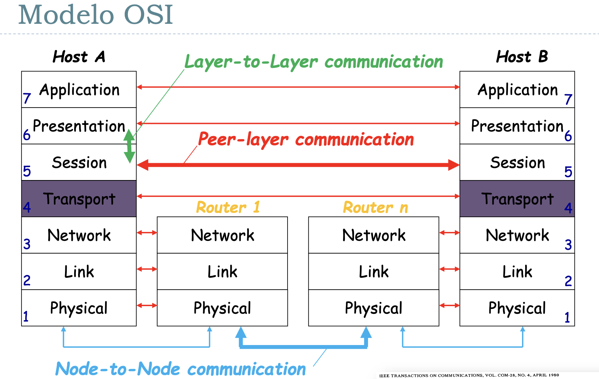

Unidad 0 - Introducción, conceptos básicos
El primer invento similar a lo que conocemos hoy en día como redes de comunicación fue la del telégrafo. Luego, le siguió la del teléfono, y ambos tenían una cualidad que persistió hasta aproximadamente la década del 70: la conmutación de circuitos.
La conmutación de circuitos como indica el nombre implicaba que haya operarios encargados de conectar a las dos personas / aparatos que querían iniciar una comunicación (cof cof, operadora, comuníqueme con pirulito)
Este approach tiene varias desventajas, por lo que mayoritariamente entre los años 1959-1969 se desarrollaron las ideas que nos llevaron a la conmutación de paquetes, cuyo objetivo principal era resultar en una red más tolerante a fallas. Cómo se logró esto?
- Redundancia: que haya múltiples caminos entre dos puntos de la red
- Descentralizada: toleracia a censura
- División en fragmentos de los mensajes cosa de que puedan tomar caminos diferentes.
ARPANET (Advanced Research Projects Agency Network) fue uno de los más importantes.
Estandarización
Las tecnologías de redes con conmutación de paquetes se suiguieron desarrollando, terminando a mediados de los 80 con una situación en la que tenías muchas redes distintas cada una con su implementación particular y sus propios detalles. Se empieza a hablar de la idea de tener una red única (en mayo de 1983 ISO publica “ISO 7498:The Basic Reference Model for Open Systems Interconnection” como un estándar internacional)

El modelo OSI describe tódo lo que sucede con la información en una comunicación entre dos puntos. Parte el proceso en 7 capas, en la que cada una tiene un fin particular y cuyas entidades relevantes son definidas por eso. Por ejemplo, en la capa de aplicación tu entidad puede ser un archivo mientras que en la capa de de red tu entidad puede ser el paquete.
Si bien se usa el modelo OSI para estudiar teoría de comunicaciones, hoy en día el verdadero ganador fue el modelo de TCP/IP, en donde hay 4 capas en lugar de las 7 que propone OSI

TLDR: OSI y TCP/IP compitieron durante un tiempo, pero una de las mayores diferencias radicaba en que OSI era un protocolo que se estaba gestando por un comité conformado por gente de la industria y cada uno quería tener su influencia sobre el protocolo. Esto resultó en problemas para ponerse de acuerdo y en un modelo que si bien era completo era mucho más difícil de implementar, más caro y complejo.
Mientras seguían discutiendo sobre el estándar de OSI, TCP/IP ya se estaba usando...
Nivel Físico
Sistema de Comunicaciones
Modelo: tengo fuente de info -> Emisor -> ----- canal de comunicación ----- -> Receptor -> Destino
- Qué es información?
- Qué es un canal?
- guiado (cable)
- no guiado (inalámbrico)
- Siempre me ingresa ruido (alto o bajo)
Hablo en meet y tengo a mi gato maullando. Tengo que hablar más fuerte. Más fuerte = mejor? Bueno no, lo que importa es la relación entre cuánto grito y el ruido ambiente.
- Relación Señal / Ruido
- La señal tiende a atenuarse a mayor distancia. Si se achica la señal y el ruido es constante, entonces se achica la capacidad de transmisión también.
- Lo importante de señal:
- Es una onda electromagnética
- Se propaga a la velocidad de la luz (a un ~70% de la velocidad de la luz en el vacío)
- Demora, no es instantáneo (es un límite físico, no lo puedo evitar)
- Tiempo de propagación
- RTT (Round Trip Time) entre USA y ARG = 100ms
Frecuencia \(f\) = Cantidad de ciclos que entran en un segundo
Longitud de onda \(\lambda\) = \(c\) (velocidad de la luz) \(/ f\)
- a mayor frecuencia menor longitud de onda (\(c\) es constante)
Glosario:
- Amplitud
- Frecuencia Angular (= \(2 \pi f\))
- Frecuencia Temporal (\(f\))
- Período = \(\frac{1}{f}\)
- Fase (desplazamiento)
Dominio Transformado
Lo anterior era orientado al dominio del tiempo. Idea: paso ese dominio a otro para procesarlo mejor:
- serie trigonométrica de fourier -> puedo representar ordas cuadradas como una serie infinita de senos y cosenos
- permite descomponer la señal en las distintas frecuencias
- transformada de fourier
- lo anterior en la teoría. Esto en la práctica
- esto es lo que en la práctica permite descomponer una señal en sus distintas armónicas / componentes de frecuencia
Ancho de banda
Rango de frecuencias senoidales que pueden pasar por el medio sin ser atenuadas (< 3db, esto es una generalización).
Tengo ancho de banda de 0 a 4 khz. Meto onda cuadrada periódica de 3khz en un canal con ancho de banda de 0 a 4khz. Qué obtengo a la salida?
Rta: Obtengo una onda senoidal de 3khz, porque la primera armónica tiene el triple de frecuencia que la fundamental (en este caso es de 3 y la armónica ya tiene 9), o sea que salvo la fundamental te filtra todo.
Teoría de la información
(En el 48') Llega Shannon con su paper "A Mathematical Theory of Communication". Ídolo, Genio, Maestro, Crack.
Idea fundamental:
- No interesa el significado del mensaje (No me importa si es teléfono, tele, internet, etc.)
- Teoría Clásica de la información
- Propone 2 teoremas fundamentales:
- Codificación para una fuente sin ruido
- Codificación para un canal con ruido
- Sorprendentemente nunca habla de cómo implementar nada
Definición: qué es la información
$$ I(E) = log(\frac{1}{P(E)}) $$
La información que me da un evento es el logaritmo de la inversa de la probabilidad de que ese evento suceda.
Unidades:
- log en base 2? 1 bit (por qué? Si tengo un dígito binario equiprobable \(I(\)sale 0/1\() = 1\)
- (hay otros)
Fuente de Memoria Nula
Es el modelo que tomamos asumiendo que cada símbolo que emite es estadísticamente independiente del siguiente
Entropía
Viene a representar algo así como la cantidad media de info por símbolo de la fuente (similar a Esperanza).
$$ \sum_S P(s_i)I(s_i) \text{ bits} $$
Es algo como la cantidad de info que voy a obtener cuando observo un símbolo / evento.
Cuándo maximizo la info que me van a dar los eventos? Cuando los eventos son equiprobables.
Extensión de la Fuente de Memoria Nula
En vez de considerar de a un bit, agrupo varios bits juntos
Codificación
Codificación sería el proceso por el cual mappeamos los símbolos de la fuente a símbolos de un alfabeto asociado. Por qué hacemos esto? En primer lugar porque a veces no tenemos una representación sencilla con la que trabajar. Y segundo porque dependiendo el tipo de codificación que usemos vamos a obtener una mejor o peor eficiencia.
- Le decimos código bloque a una codificación que asigna cada símbolo de la fuente a una secuencia de símbolos del alfabeto destino.
- Si la codificación es una función inyectiva, decimos que la codificación es no singular
- Y decimos que una codificación es unívocamente decodificable si ninguna tira de símbolos del código (o sea los códigos generados) admite más de una única decodificación.
- Por último, decímos que un código es instantáneo si es posible decodificar sin ver los símbolos que suceden (no tiene que hacer look ahead)
Una condición necesaria y suficiente para que un código sea instantáneo, es que no haya palabra en el alfabeto que sea prefijo de la misma. Ojo, dos palabras pueden tener un mismo prefijo común siempre que el mismo no pertenezca al alfabeto.
Teorema: Instantáneo => unívocamente decodificable
- En ascii tenemos 8 digitos binarios por símbolo
- Sin embargo, en morse tenemos una cantidad variable
Pensemos ahora que lo que mandamos son mensajes, y para representar cada mensaje (\(m_i\)) lo representamos con una palabra de longitud \(L_i\). Y nuestro símbolo se codifica con cadenas de un alfabeto de \(r\) símbolos.
Para esto último se define la longitud media de un código. Es la probabilidad de ocurrencia de cada símbolo por su longitud. Sería como la esperanza de la longitud de recibir un símbolo, o algo así.
$$ L = \sum{p_i L_i} $$
Cómo lo minimizo? Al que más probabilidad tenga, le doy el código más chico.
Otra cosa más, es que para asegurar que no haya pérdida de información requiero que:
$$ L log(r) \geq H(S) $$
Donde \(log(r)\) es la cantidad promedio máxima de info de un símbolo del código (por lo que vimos antes).
Definimos con esa desigualdad la eficiencia de un código \(h\) como:
$$ h = \frac{H(s)}{L log(r)} $$
y \(h_{max} = 1\)
Codificación de Huffmann
Es un método que permite construir codificadores óptimos en base a la frecuencia en la que aparecen los símbolos (de la fuente).
Medios de Transmisión Reales
Cualquier canal de comunicación:
- Está expuesto a ruido
- Tiene problemas de potencia
- Tienen problemas de ancho de banda
Fórmula de capacidad de Shannon para un canal sujeto a ruido
$$ C_max(bps) = B(\text{hz}) log_2(1 + \text{SNR}) $$
La relación señal-ruido de la capacidad de Shannon se expresa como logaritmos:
$$ SNR_{db} = 10 log_{10}(\text{SNR}) = 10 log_{10}(\frac{\text{PotenciaSeñal}}{\text{PotenciaRuido}}) $$
Por qué la escala logarítmica?
Es para ajustarse a las magnitudes. La atenuación es logarítmica, el oido tiene respuesta logarítmica, etc. Y la escala logarítmica resulta más práctico (sobre todo para visualizar)
Intro a Nyquist
El ñato este tiró una fórmula para la capacidad máxima en canales sin ruido:
-
2 niveles: $$ C = 2B(\text{Hz}) $$
-
\(M\) niveles: $$ C = 2B(\text{Hz})log_2(M) $$
Sin embargo hay una restricción, \(M\) tiene que ser más chico que \(\sqrt(1 + \text{SNR})\)
Qué es el delay?
Está formado por:
- el tiempo de propagación
- el tiempo de transmisión
- el tiempo de encolamiento
- el tiempo de procesamiento
Notar que sólo el tiempo de propagación ya te puede estar limitando porque transmitimos casi a la velocidad de la luz y sin embargo para mandar 1 bit por 10000km por fibra tengo un tiempo de propagación aproximado de 50ms (y por lo tanto 100ms de RTT).
Unidad 1 - Nivel Físico
La fórmula de Shannon pone un límite en la tasa de transmisión, pero no en la probabilidad de error. En teoría se podría minimizar arbitrariamente la probabilidad de error usando una codificación lo suficientemente combleja y obviamente con \(R_b \leq C\). Al no cumplir esto último esa idea de minimizar la probabilidad de error arbitrariamente ya no es posible.

Si graficamos la relación entre la SNR y la relación capacidad sobre ancho de banda obtenemos el gráfico de arriba, que de alguna forma nos da valores para lo que es posible y lo que no. En la práctica se busca asemejarse lo más posible a la función graficada, buscando aumentar la cantidad de bits/s.
Tengo un canal de ancho de banda de 0 a 2 Mhz, cuál es la forma de la onda de salida si inyecto una señal de 1 Mhz. Sólamente obtengo la fundamental ya que a partir de la tercer armónica que no entra en el ancho de banda.
Medios de transmisión
Hoy en día tenemos internet compuesta por provedores que tiene tecnologías de acceso:
- Fibra
- Cable
- Satélite
- Wifi
- Celular

Las ondas electromagnéticas "necesitan" (en realidad no necesitan nada, se pueden propagar por el vacío) un medio de transmisión por el cuál transmitirse. Pueden ser:
- Guiados: Cable
- de cobre
- coaxil
- fibra óptica
- No guiados: El espacio, libre
- por radio
- microondas
- ondas infrarojas
- laser
- satélite
- luz
Red telefónica
Vamos a tomar de ejemplo a la red telefónica ya que muchos de los conceptos se replican en otros medios de tecnologías.
- mediante conmutación de circuitos
Multiplexación
Multiplexar consiste en poder tener varias comunicaciones simultáneas en un mismo troncal físico.
Podemos multiplexar:
- por tiempo: una suerte de round robin
- por división frecuencia: transmito a través de las distintas bandas
- el circuito para esto suele ser más complejo
- al tener menos ancho de banda es "más lento", pero tengo más uptime
- por división de onda: lo mismo que antes pero aplicado a sistemas ópticos

Taxonomía de Redes
Las Redes de comunicaciones se pueden dividir en:
- Redes de conmutación de Circuitos
- Redes de conmutación de Paquetes
- Redes con Circuitos Virtuales
- Redes de Datagramas (en el 99.999% de la materia vemos esto)
- servicio sin conexión
- el nivel de transporte brinda soporte para dar servicio orientado a conexión también (ej: TCP)
Las redes de conmutación de paquetes se basan en el concepto de multiplexación estadística. Mi conmutador tiene un buffer y despacha de a poco en base a algún criterio en base a la dirección origen y destino de dichos paquetes.
Esta idea también implica que cada paquete compite con otros por ser enviado y puede llevarnos a situaciones de congestión.
Conversión Analógico Digital
Tengo 2 Etapas:
- Primero una etapa de muestreo
- Gracias a Nyquist sabemos que debemos muestrear al doble del ancho de banda (por lo menos)
- Además, tengo que definir con cuántos dígitos binarios uso para representar cada muestra
- Segundo cuantifico dichas muestras (o sea mando el valor a su representación binaria correspondiente)
- Hoy en día a esa técnica la llamamos PCM (Pulse Code Modulation)
Teorema del muestreo (Nyquist)
Si queremos Reconstruir una señal cuya frecuencia máxima es \(f_m\) debemos muestrar dicha señal a una razón de \(f_s > 2 * f_m\) llamada frecuencia de muestreo

Este es un diagrama (un poco antiguo). Las oficinas interurbanas operaban en digital, por lo que era necesario que la señal originalmente analógica sea convertida a una señal digital.
Uno en casa entonces tenía un modem, que emitía una señal analógica y luego le seguía un codec que se encargaba de hacer la conversión analógico digital. Del otro lado de la red, estaba un codec que cumplía la función inversa y un modem por cliente.
Si lo pensamos con el caso del teléfono, la mayoría de las comunicaciones por voz se pueden agrupar en el rando de 0-4Khz, por lo tanto se necesita una tasa de muestreo de 8Khz o 8000 muestras por segundo. Como en ese caso cada muestra se codificaba en 8 bits (En realidad son 7 bits para la data y 1 para sincronización), era necesario un ancho de banda (I know, está mal usar este término) de 64kbps.
Modulación
Frecuencia Modulada vs Amplitud Modulada
Tengo la Señal Portadora y la Señal Modulante.
- Frecuencia Modulada es cuando la frecuencia de la portadora varía en base a la amplitud de la modulante.
- Amplitud Modulada es cuando la amplitud de la portadora varía en base a la amplitud de la modulante.
Modem
Si volvemos al diagrama, la idea del modem era transformar la se√±al digital de la computadora en una se√±al anal√≥gica para poder mandarla por los cables de cobre (y posteriormente volver a ser convertida a digital por el codec ü§∑).
El truco de los modems entonces es meter la información sobre una señal portadora que pueda pasar por el ancho de banda disponible. Para esto hay 3 técnicas de modulación de una señal digital sobre una analógica:
- Desplazamiento de amplitud (ASK)

- Desplazamiento de frecuencia (FSK)

- Desplazamiento de fase (PSK)

-
Velocidad de Modulación \(V_m\): es el número de cambios de señal por unidad de tiempo. Se mide en Baudios (símbolos / segundo).
-
Velocidad de Transmisión: \(V_m * N\), donde \(N\) es el número de bits por símbolo. Se mide en bits por segundo.
Let's go even further
Recomendación: si tienen dudas lean esta parte del Tanenbaum, en el Peterson no está.
Vieron que dijimos que la velocidad de Modulación la medimos en símbolos por segundo, y no en base a la cantidad de bits. Bueno, tranquilamente podemos asumir que no tengo un único canal binario si no muchos (varios bits), y la combinación son los distintos símbolos a transferir.
Luego, lo que puedo hacer es modular para 2 bits en base a 4 frecuencias o 4 fases (QPSK) por ejemplo. Esto es lo que se conoce como modulación multinivel.
También puedo combinar amplitud y fase (QAM) o amplitud y frecuencia (no puedo ambos porque fase y frecuencia están relacionados). (hoy en día ya estamos llegando a 1024-QAM y 4096-QAM)

Y puedo agregar tantos niveles como quiera, pero fijate que a medida que agrego más puntos, hago más finita la cuadratura. Con lo cual es más vulnerable al ruido.
El error generado se llama MER, y se expresa en db como:
$$ \text{MER} = 10 log \frac{\text{RMS error magnitude}}{\text{average symbol magnitude}} $$
A medida que me alejo del router y pierdo señal, aumenta la SNR y por ende me cuesta más distinguir cada símbolo de QAM. Entonces lo que hace Wi-Fi es achicar la cantidad de símbolos y por ende baja de QAM-1024 (ponele) a QAM-256, y por ende baja su velocidad para evitar errores en la transmisión.
Unidad 2 - Nivel de Enlace
Tanto OSI como TCP usan un modelo basado en capas. Cada Entidad separa su funcionalidad en varias capas. Cada capa agrega info de control, mediante el agregado de headers. De esta forma la capa agrega / interpreta los headers o frames enviados / recibidos y permite que haya una comunicación entre las capas adyacentes pero a su vez capa a capa entre los distintos hosts.

Además, el servicio que una capa le brinda a otra se puede clasificar en:
- sin conexión y sin reconocimiento (ej: UDP)
- sin conexión y con reconocimiento (ej: uso de ACK en capa 2 de OSI)
- orientado a conexión (ej: websockets, TCP)
El objetivo de los protocolos de comunicación (nivel de enlace en OSI), buscan en proveer:
- confiabilidad
- control de errores
- control de flujo
Un ejemplo para garantizar control de errores sería agregar un CRC / checksum que el receptor valida. Si el receptor detecta que el mensaje es inválido, basta con que no mande un ACK (aknowledge) de que recibió el mensaje.
Control de errores
Si consideramos que lo que mandamos son codewords de \(n\) bits, compuestos por \(m\) bits de datos y \(r\) bits de redundancia y siendo \(d\) la distancia mínima de Hamming entre 2 codewords posibles y \(e\) la cantidad de bits erroneos para un cierto mensjae, necesitamos que se cumpla que:
- \(e + 1 \leq d\) para poder detectar que hubo errores
- \(2*e + 1 \leq d\) para poder corregir errores
Si quieren ver un algoritmo para detección y corrección de errores pueden chequear Reed-Solomon
Confiabilidad
Para garantizar confiabilidad, va a ser necesario poder efectuar retransmisiones. Esto se puede dar de forma implícita cuando se produce un timeout (tiempo sin recibir un ACK de que se recibió el mensaje), o de forma explícita si nuestro protocolo admite mensajes de control.
Cómo puedo hacer el ACK de cierto símbolo? Mediante números de secuencia. El ACK entonces representa que el frame con cierto número de secuencia fue recibido.
Primer approach: Stop and Wait
- Espero a recibir el ACK para mandar el nuevo frame.
- Dado que es "bloqueante", basta con tener un único bit para el número de secuencia.
Qué pasa si ocurre lo siguiente:
- El emisor manda el primer frame
- Transcurre el tiempo suficiente para que ocurra un timeout (en el medio el Receptor recibe el frame pero no responde a tiempo)
- El emisor vuelve a mandar el primer frame
- El emisor recibe el ACK del primer frame
- El receptor recibe el primer frame y manda el ACK
- El emisor recibe por segunda vez el ACK del primer frame
Ese fenómeno es lo que se conoce como el problema del solapamiento o el problema de las reencarnaciones, y los distintos approaches van a buscar problemas de lidiar con esto.
Eficiencia de un protocolo
Queremos evaluar cuánto tiempo se está transmitiendo vs cuánto tiempo se está esperando por confirmaciones. Lo definimos como:
$$ \eta_{proto} = \frac{T_{tx}}{\text{RTT}(F)} $$
Pregunta: Tiene sentido que \(\eta_{proto} > 1\)?
Segundo approach: Ventana deslizante
Para el caso de Stop and Wait, notar que transmito la mitad de lo que dura el RTT y después espero, entonces tengo una eficiencia del 0,5. Queremos hacerlo mejor.
Idea: mando varios frames seguidos, sin esperar al ACK. Esto es el concepto de ventana de frames, y en ese caso el cálculo de la eficiencia cambia ligeramente:
$$ \eta_{proto} = \frac{T_{tx}(V)}{\text{RTT}(F)} $$
Ahora el \(T_{tx}(V)\) es el tiempo que me tarda mandar todos los frames de la ventana, mientras que el \(\text{RTT}(F)\) es lo que tarda en volverme el ACK del primer frame que mandé.
- Requiero de más bits para el número de secuencia (tiene que permitirme identificar todos los frames de la trama por lo menos)
- A medida que recibo los ACk voy desplazando la ventana (ojo porque ahora hay que determinar cuándo desplazo la ventana. Siempre que recibo? O sólo si recibí el siguiente al último que tenía reconocido?)
Para buscar la mejor eficiencia posible se define como tamaño de ventana (en frames) a:
$$ \text{SWS} = \frac{V_{tx} * RTT}{|Frame|} $$
Y envío un frame nuevo siempre que \(\text{UltimoFrameEnviado} \leq \text{UltimoFrameReconocido} + \text{SWS}\)
ACKs acumulativos vs selectivos
En la sección anterior faltó mencionar cuál es el comportamiento esperado del receptor ante algún error. El primer approach es el de ACKs acumulativos, en donde a partir de que se produce un error en la transmisión el receptor ignora todos los mensajes posteriores hasta que el frame con error se reenvía y recibe correctamente. (Esta idea de retransmitir todo se lo conoce también como GoBackN)

Ahora, también podría pedir que el receptor tenga un buffer que permita guardar los frames que va recibiendo, y en ese caso basta con que el receptor mande una señal pidiendo el frame específico.

Para ambos casos definimos la ventana de recepción \(\text{RWS}\) como:
$$ \text{RWS} = \begin{cases} \text{SWS}, & \text{si hay SACK} \\ 1, & \text{en caso contrario} \end{cases} $$
Además, como se puede dar acá también el problema de las reencarnaciones, es necesario poder distinguir por lo menos \(SWS + RWS\) frames distintos.
Sobre la eficiencia de la ventana
Primero necesito que definamos algunos conceptos:
- El tiempo de transmisión \(T_{tx} = \frac{|datos|}{V_{tx}}\) es el
tiempo para enviar todos los bits de un frame a través del medio de
transmisión.
- Ocupa una porción significativa de tiempo en conexiones lentas o donde el frame es muy grande.
- El tiempo de propagación \(T_{prop} = \frac{distancia}{V_{prop}}\) es
el tiempo desde que el bit es transmitido hasta que llega al receptor.
- La velocidad de propagación \(V_{prop}\) es algo propio del medio de transmisión, por lo general cercano a la velocidad de la luz (suele ser una constante multiplicada por la velocidad de la luz).
- Ocupa una porción significativa de tiempo en conexiones entre dos puntos muy lejanos.
- El tiempo de encolamiento \(T_{queue}\) es el tiempo que espera un frame en un buffer hasta ser transmitido. Dependiendo del estado de congestión de la red puede ser significativo o no.
- El tiempo de procesamiento \(T_{proc}\) es el tiempo que se tarda en leer el header de un frame y decidir qué hacer con él. En la práctica se lo asume nulo o poco significativo.
Por último, la capacidad de volumen \(C_{vol}\) de un canal sería la cantidad de bits que entran en el canal desde que se envía el primer bit hasta que llega al receptor (una suerte de flujo máximo de bits para quienes hayan cursado algo III).
$$ C_{vol} = \text{Delay} * V_{tx} $$
Sin embargo, para los protocolos punto a punto se es un poco más específico y se mide como la cantidad de bits que entran hasta recibir el primer ACK
$$ C_{vol} = \text{RTT} * V_{tx} $$
(Recuerdo: antes mencionamos que el tamaño óptimo de ventana era \(SWS = \frac{\text{RTT} * V_{tx}}{|frame|} = \frac{C_{vol}}{|frame|}\))
Entonces... ¿Por qué es óptimo?
Recordamos que la eficiencia del protocolo de ventana deslizante se medía como:
$$ \eta_{proto} = \frac{T_{tx}(V)}{\text{RTT}(F)} $$
\(T_{tx}(V)\) Era el tiempo que tardaba en mandar todos los frames de la ventana. Eso lo podemos pensar como:
$$ T_{tx}(V) = \frac{SWS * |frame|}{V_{tx}} $$
Entonces:
$$ \eta_{proto} = \frac{SWS * |frame|}{V_{tx} * \text{RTT}(F)} \\ SWS = \eta_{proto} * \frac{V_{tx} * \text{RTT}(F)}{|frame|} $$
Y asumiendo que \(\eta_{proto} = 1\) dado que es óptimo obtenemos que:
$$ SWS = \frac{V_{tx} * \text{RTT}(F)}{|frame|} $$
Unidad 3 - Medios Compartidos
Antes vimos que se podía compartir un canal de transmisión mediante técnicas como la multiplexación por tiempo o por frecuencia. Esas técnicas lo que permitían era lograr que varios nodos utilicen el medio "de forma independiente", o sea que la transmisión de un dispositivo no interfiera con la de otro.
Ahora vamos a ver otro approach, que es sugerido y generalmente utilizado para ethernet y en el protocolo de wifi (802.11). La idea es permitir que todos los dispositivos usen el mismo canal para transferir, y si más adelante hay un problema (ej 2 quieren transmitir al mismo tiempo) ahí se ve cómo se resuelve.
Y por supuesto se va a buscar minimizar la cantidad de intentos que tiene que hacer un dispositivo para poder hacer el envio de paquetes deseado y asegurar fairness.
La tecnología que usa Ethernet y otras redes inalámbricas (802.11), lleva el nombre de Carrier Sense, Multiple Access with Collision Detect (CSMA/CD). Es un protocolo que permite que un conjunto de nodos manden mensajes a través de un enlace compartido.
- El Carrier Sense viene por el hecho de que todos los nodos pueden distinguir en todo momento si un canal está libre o en uso.
- Por otro lado, el Collision Detect viene por el hecho de que el emisor a medida que transmite sensa el canal y puede darse cuenta de si hubo una colisión en la transmisión con otro nodo.
La realidad es que hoy en día la mayoría de las conexiones cableadas son punto a punto (o sea el enlace es propio de cada par de nodos). Y la parte de multiplexación la resuelven los switches. Es por eso que hoy en día no está tan presente el protocolo... redes cableadas.
Por otro lado las redes inalámbricas hoy en día son la norma en muchos entornos con lo cual el uso de CSMA/CD retoma relevancia.

Llamamos Dominio de Colisión al conjunto de los nodos que pueden generar una colisión en el medio al intentar transmitir (no están incluidas los nodos separados por medio de un switch).
CSMA/CD
Vamos a ver el caso de acceso múltiple en cable ethernet ya que si bien es algo anecdótico hoy en día, los mismos principios se pueden aplicar a nuevas tecnologías.
Para empezar hablemos un toque de Ethernet:
- Admite tramos de hasta 500m (no más para evitar atenuación de la señal).
- Admite máximo hasta 4 repetidores
- Requiere como mínimo 2,5 metros entre host y host.
- Las transmisiones son broadcasteadas a lo largo del cable (y a través de repetidores)
Además, un frame de Ethernet contiene los siguientes campos (segun el estándar 802.3):
- Primero tiene un preámbulo de 64 bits, es una secuencia de 0's y 1's alternada que le permite al receptor sincronizarse con la señal.
- Después le siguen las direcciones de destino y fuente respectivamente que son
direcciones de 48 bits.
- las direcciones son "únicas" y vienen grabadas en la rom de los adaptadores de red
- El adaptador de red sensa el canal y si ve un frame cuyo campo de destinatario es su dirección entonces le deriva el frame al host. Hace lo mismo si el frame tiene la dirección de broadcast.
- Después sigue el campo del tipo, que indica a cuál protocolo de más alto nivel se le enviaría el frame.
- Luego el body del frame tiene la data en si a enviar. Un detalle no menor es que un frame puede contener hasta 1500 bytes de datos, y tiene que tener por lo menos 46 bytes de datos (esto último es necesario para tener tiempo suficiente de detectar una colisión) por lo que en caso de no tener suficientes datos se le agrega algo de padding.
- Por último un campo CRC para chequeo de errores
Un pequeño detalle es que para el host el frame de ethernet en realidad no tiene ni el preámbulo ni el CRC, el adaptador de red es el que se encarga de agregar esos campos extra.
El algoritmo que sigue un transmisor que implementa CSMA/CD se puede resumir con el siguiente diagrama de estados:
- El transmisor siempre que le llega un frame nuevo va a intentar transmitir
- Si el canal está libre transmite de una
- Si el canal está ocupado, espera a que se libere
- Ni bien se libera, el transmisor va a intentar enviar
- Si está transmitiendo, pueden pasar 1 de 2 cosas:
- Es el único dispositivo usando el canal y el frame se envía correctamente y sin problemas
- Mientras está enviando, otro dispositivo también decide enviar un frame,
generando lo que se conoce como una colisión. Para eso el transmisor
sensa el medio y si detecta un voltage anormal entonces eso es a causa de
la colisión
- Cuando detecta una colisión frena la transmisión actual y envía una
secuencia de jamming de 32 bits (por lo general es una tira de
1's y listo). El objetivo de dicha secuencia es hacer que el receptor
deje de escuchar la señal.
- Eventualmente el otro emisor también va a detectar la colisión y va a enviar su propia secuencia de jamming.
- Una vez que se detecta la colisión y se envía la secuencia de jamming, se aplica una política de exponential backoff. Eso es esperar un cierto tiempo antes de enviar. Si se vuelve a dar una colisión, esperar el doble y así hasta que se haga efectiva o se supere un límite predefinido (en general es de 16 intentos), en cuyo caso el adaptador avisa al host que la transmisión falló.
- Cuando detecta una colisión frena la transmisión actual y envía una
secuencia de jamming de 32 bits (por lo general es una tira de
1's y listo). El objetivo de dicha secuencia es hacer que el receptor
deje de escuchar la señal.
Para ser un poco más específico, la idea en el exponential backoff es dividir el tiempo en slots entre 0 y \(2^k - 1\), siendo \(k\) la cantidad de intentos. Se elige uno de los slots al azar y eso representa la cantidad de slots que se espera. Un slot representa 51,2 \(\mu\)s que es el tiempo necesario para transferir el frame más chico.
Ahora que conocemos el algoritmo, tiene más sentido el motivo por el cuál necesitamos tener al menos 46 bytes de datos a enviar. Esto es porque incluso en el caso en el que estén los dos hosts lo más alejados posible (2500 metros usando 4 repetidores), el Round Trip Delay es de al rededor de 51,2 \(\mu\)s que en una conexión de 10Mbps equivale a 512 bits. De esta forma, si nuestra frame tiene al menos 512 bits si o si uno de los dos emisores va a detectar la colisión antes de terminar de enviar su frame.
Ethernet se dice que es un protocolo 1-persistente porque siempre que sensa el medio y está libre va a intentar enviar. Este es un caso particular de lo que se conoce como transmisores p-persistentes, en donde se transmite con probabilidad p una vez que se libera el medio.
Una última observación es que en este algoritmo se contempla que sólo se puede leer o escribir en el canal, pero no los 2 al mismo tiempo. Eso se conoce como un algoritmo de half-duplex. No confundir esto con la clasificación de canales. El canal puede ser full duplex (se puede escuchar y enviar al mismo tiempo) mientras que el algoritmo es half duplex.
Recomiendo también pegarle una chusmeada a esta explicación de CSMA/CD.
Midiendo performance de CSMA
Sean \(S\) la carga ofrecida (nro de intentos de transmisión por unidad de tiempo, o sea cuánto tengo que usar del medio para transmitir) y \(G\) el goodput (proporción de transmisiones exitosas por unidad de tiempo), entonces:
$$ S = G * (1 - P_{colision}) $$
Podemos graficar la relación entre la carga, el goodput y la variante de CSMA:

- Aloha es otro protocolo que consiste en lo que vimos antes. Enviar un mensaje
y si no me llega un ACK de dicho mensaje re-enviar. (esto no descarta
totalmente ese mecanismo para asegurar confiabilidad y control de errores
porque como verems más adelante si se usa en protocolos de más alto nivel)
- Slotted aloha es lo mismo pero la emisión se da en "slots discretos"
- CSMA es fácil de implementar pero tiene mala perf en la práctica a medida que aumenta la carga. (en estudios se validó que a partir de 30% de carga aprox ya se degrada mucho)
- En el gráfico se hace mención de non-persistent CSMA. La diferencia entre este y 1p-CSMA/CD es que 1p-CSMA/CD transmite ni bien encuentra el canal libre. En cambio el non persistent sensa el canal y si está en uso espera una cantidad fija de tiempo (no transmite ni bien se libera). Si bien reduce las changes de colisión también cae el throughput. Dicho eso reacciona mejor a la relación entre carga y goodput.
- Se hace obvia la relación entre el delay hasta poder transmitir (si espero más entre cada transmisión) y el goodput, y cómo esto afecta al throughput final.
TODO: Resumir diapos 20-24 inclusive (no encuentro referencia en la docu)
Unidad 4 - Nivel de Red
Unidad 5 - Ruteo
Unidad 6 - Nivel de Transporte
Unidad 7 - El problema de Congestión
Unidad 8 - Nivel de Aplicación
Unidad 9 - Seguridad
Bibliografía
Libro de Cabecera de la materia:
- Larry L. Peterson and Bruce S. Davie. 2011. Computer Networks, Fifth edition: A Systems Approach. Morgan Kaufmann Publishers Inc., San Francisco, CA, USA.
Libro complementario que no vimos en la materia pero me pareció didáctico: